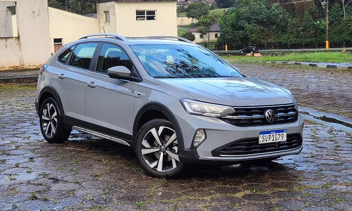
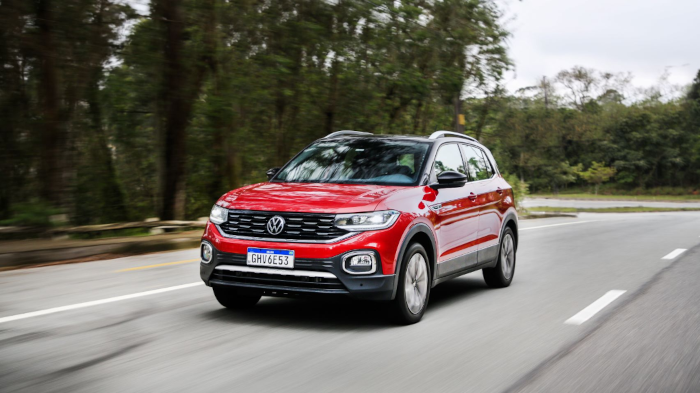

VOLKSWAGEN FUNDAÇÃO
A Volkswagen é uma fabricante alemã de veículos que pertence ao Grupo Volkswagen. É o maior fabricante de automóveis do mundo e tem a sua sede na cidade de Wolfsburg, na Baixa Saxônia. O Grupo Volkswagen, além da marca Volkswagen, é, também, proprietário das marcas Audi, Bentley, Bugatti, Ducati, Lamborghini, SEAT, Porsche, Škoda Auto, MAN, Volkswagen Caminhões e Ônibus e Scania. Em março de 2011, a Volkswagen adquiriu o segmento comercial da Porsche por 3,3 bilhões de euros, adquirindo, assim, o direito de negociar e operar a marca "Porsche", fazendo com que a Volkswagen fique mais próxima à fusão com a "PHS" (Porsche Holding Salzburg). Saiba mais em https://pt.wikipedia.org/wiki/Volkswagen
VOLKSWAGEN JETTA COMFORTILINE

O Jetta é um sedan de segmento C ("médio" no Brasil) da Volkswagen. Produzido desde 1979, utiliza base do Volkswagen Golf e é fabricado Alemanha e no México. O Jetta tem sido comercializado há mais de cinco gerações com diversos nomes: Atlantic, Bora, Jetta City, Fox, Jetta, Sagitar, Vento e Golf Sedan. A partir de 2011, a VW passou a trazer do México a 6ª geração do Jetta, deixando de importar o Bora, que ainda era produzido lá. O modelo chegava nas versões Comfortline e Highline. A primeira equipada com o mesmo motor EA 113 2.0 de 8 válvulas flex, usados no Golf e na linha Polo, e duas opções de transmissão, a manual de 05 marchas e automática de 6 marchas tiptronic com opção de trocas no volante. A Highline vinha equipada com o motor EA 888 2.0 16V Turbo e apenas transmissão automatizada DSG de dupla embreagem, versão que consagrou o modelo.
VOLKSWAGEN NIVUS HIGHLINE
O Volkswagen Nivus (VW Taigo na Europa) é um SUV crossover de porte compacto (segmento B), e é caracterizado por ser o primeiro veiculo utilitário compacto com linhas de coupé à venda na Europa e no Brasil. O modelo, apesar de ser baseado na plataforma MQB A0 do Polo e compartilhar algumas peças de carroceria com o modelo, é totalmente divergente do mesmo. Suas linhas são baseadas no conceito New Urban Concept. Totalmente projetado e desenvolvido no Brasil, de forma digital, algo inédito na história da montadora. O carro foi aceito de forma surpreendente tanto pela matriz da Volkswagen, quando pelos estudos de design feito com os consumidores locais. O que fez com que a marca agendasse planos para que em 2021 a sua fabricação se inicie em Pamplona, Espanha, para abastecer o mercado Europeu com o nome de Taigo. Além disso, o Brasil será responsável por fabricar para todo o mercado sul-americano. Atualmente montado em São Bernardo do Campo, SP, na fábrica Anchieta ao lado de Polo e Virtus, que também são irmãos da plataforma MQB A0.
VOLKSWAGEN SAVEIRO CROSS CABINE DUPLA

No início dos anos 80 a família Gol já possuía um relativo sucesso mas faltava algo, sendo que a Fiat e Ford já tinham suas respectivas pick-ups Fiorino e Pampa, e a Volkswagen vendo esta necessidade, após o árduo desenvolvimento era lançada em setembro de 1982 a Saveiro. O nome foi inspirado em uma embarcação nordestina que transporta passageiros e carga fazendo jus a funcionalidade do carro. Lançada com o DNA do Gol, o velho motor boxer 1.6 refrigerado a ar, um motor confiável porém ultrapassado, seus concorrentes eram mais modernos e tinham refrigeração a água, a VW introduziu o propulsor refrigerado a água na linha 1985.
VOLKSWAGEN T-CROSS HIGHLINE
O Volkswagen T-Cross 200 TSI 2025 vem equipado com um motor 1.0 turbo com injeção direta, capaz de entregar uma potência 128 cavalos com etanol, no entanto, com gasolina os números são menores, são 116 com a 5.500 rpm, com um torque de 20,4 kgfm a 2.000 rpm em ambos os combustíveis.
VOLKSWAGEN VIRTUS GTS

Desde 2020, o Virtus conta com a versão GTS, uma alusão aos esportivos dos anos 80, Gol e Passat GTS. O modelo difere dos outros com mudanças estéticas como rodas exclusivas, uma faixa que acompanha toda a dianteira do carro, passando pelos faróis. Mecanicamente, o Virtus GTS usa o mesmo motor do Jetta, o 250 TSI, 1.4 16V que rende 150 cv de potência com etanol.